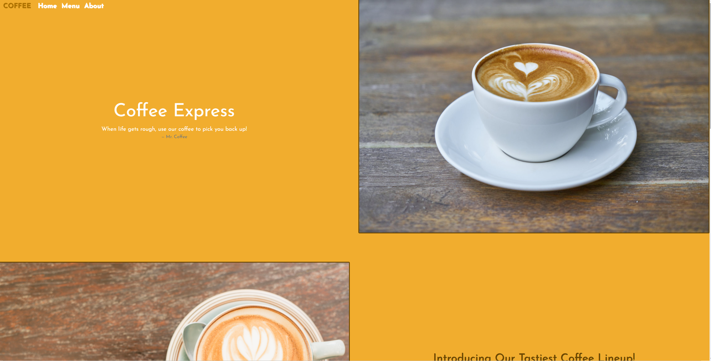
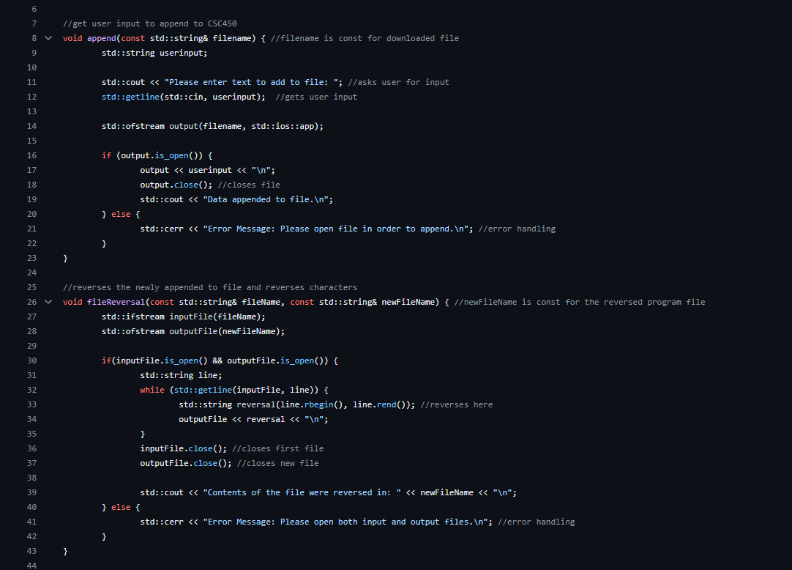

HTML, CSS, and, JavaScript
I have been working with these three languages for over a decade now and they tend to be my favorite three! Learning how to create beautiful templates, figuring out dynamic methods, and making optimized sites are some of my favorite things to do. I truly love learning about how the web works, so spending years learning to become a developer was on the top of my list. The creation of content, styling and placement, and functionality all come together and create eye popping websites.
SQL and NoSQL
Databases such as MySQL and MongoDB were some other primary things that I worked with in my educational journey. MongoDB specifically is one of my go to databases for backend web development as it encourages scalability and separates stored data from JavaScript files. Being able to store user and site data within a database is a vital skill and is crucial in various websites or applications!
Java, Python, and C++
Creating applications in these three languages as well as figuring out the concepts proved to be a hefty challenge at CSU Global. I have learned how to create interfaces, work with multithreading, work with loops, algorithms, functions, classes, etc. Security vulnerabilities was also a very important subject touched in many of my classes and preventing these was always top priority.